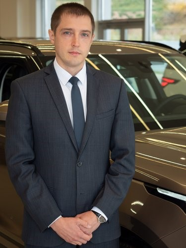

Сведения о себе
Возраст: 41 год
Проживаю: город Красноярск
Национальность: Русский
Семейное положение: женат
Готов к командировкам
Связаться со мной:
+7(913)543-30-19
Опыт работы
2024 - н.в. ИП Чивчян Георгий Тумасович, сеть автосервисов «Форвард Авто»
Технический директор
- Разработка и внедрение регламентов по техническому обслуживанию, доработка должностных инструкций для оптимизации работы собственных СТО и возможности масштабирования сети в формате франшизы.
- Работа с потенциальными франчайзи (презентация проекта, помощь в подборе помещения, расчет производственной мощности СТО и подбор необходимого технологического оборудования).
- Проведение выездных аудитов в филиалы сети с целью контроля соблюдения стандартов.
- Разработка предложений по повышению рентабельности и сокращения расходов.
- Анализ технических проблем, разработка и внедрение эффективных решений (организация контроля качества с разработанными чек листами).
2023-2024 ООО "Севербоат"
Руководитель сервисной службы водного транспорта
- Управление службой сервиса и создание системы мотивации сотрудников (менеджеры по продаже запасных частей, приемщики, механики по ремонту аэролодок). Организация работы выездных бригад. С "0" организовал документооборот для корректного списания и учета запасных частей, а также контроля объемов продаж менеджеров и отдела в целом.
- Контроль ведения сделок b2b и b2g (223 и 44ФЗ в т.ч. сделки с раздельным учетом).
- Претензионная работа и работа с гарантийными рекламациями. Настроил процесс гарантийного ремонта и его согласования. Наладил контроль за обращениями и работу с ними по средствам написанных и внедренных процедур (регламентов), с пошаговыми действиями сотрудников. Усилил защищенность предприятия от клиентов "Злоупотребляющих правом" (ст.10 ГК РФ).
- Наладил процесс взаимодействия Службы сервиса с участками Производства, с контролем сроков изготовления комплектующих для Аэролодок и отправки в филиалы г. Москва, г. Иркутск. Добился сокращения сроков получения запасных частей в филиалах.
- Со своей командой успешно реализовал проект испытаний для подтверждения мощностных характеристик двигателей Chevrolet LS3 в ФГУП «НАМИ» с получением протокола испытаний. Это позволило осуществлять продажи Аэролодок в государственные структуры в том числе ГИМС МЧС России.
2022-2023 ООО «Спектр» официальный партнер ГК «Torens»
Руководитель обособленного подразделения в городе Красноярск
- Разработка и реализация стратегии развития обособленного подразделения в городе Красноярск.
- На базе склада-магазина успешно запустил экономически эффективную Станцию технического обслуживания (СТО) с рентабельностью 33,7%. Запуск СТО обеспечил возможность замены купленных агрегатов, их гарантийную поддержку, а также предоставление услуг по техническому обслуживанию и ремонту автомобилей.
- За время работы добился стабильного снижения процента возврата автомобилей по гарантийным обращениям после замены двигателей до 5% (отношение трудозатрат по гарантийному ремонту к общей месячной выработке СТО), за счет качественной предпродажной подготовки, проверки с применением видеоэндоскопа и поэтапным контролем качества при установке агрегата на автомобиль.
- На базе СТО для нужд магазина и автосервиса был запущен пост по качественному капитальному ремонту двигателей (обучение моториста, закупка необходимого измерительного и специализированного инструмента).
2018-2022 ООО "Вестминстер" Ягуар Лендровер центр
Руководитель отдела сервиса
- Организация и управление работой отдела сервисного обслуживания автомобилей марки Ягуар- Ленд Ровер (разработка и защита годового коммерческого бюджета отдела сервисного обслуживания, разработка мотиваций, организация работы сотрудников: постановка и контроль достижения индивидуальных целей, анализ процесса работы отдела и достигнутых результатов, корректирующие действия и обратная связь сотрудникам. Для обратной связи и постановки целей использую методику SMART).
- За счет развития продаж высокомаржинальных продуктов (детейлинг) в период 2018-2021г.г. увеличил рентабельность работы своего подразделения на 27% (с 22% до 49%).
- Повысил лояльность и доверие клиентов к официальному сервису автомобилей Jaguar Land Rover, это выражено следующими показателями:- процент прироста обслуженного парка дилерским центром (ДЦ): 2019г. - 8,7%, 2020г. - 9,4%, 2021г. - 21,7%- доля жалоб клиентов, урегулированных на уровне ДЦ — 98,3%.
- Достижение: в Ежегодных соревнованиях JLR Premium Service Award проводимых компанией Jaguar Land Rover среди дилерских центров РФ и Республик Беларусь, Казахстан, Армения по итогам фискального года 2019/2020 сервис под моим руководством занял 2е место. Оценка выполнялась по финансовым показателям, показателям Клиентской удовлетворенности, проценту прироста обслуживаемых автомобилей и выкупа запасных частей, технические КPI.
2014-2018 ООО "Крепость-Аэропорт" Тойота центр Красноярск Запад
Старший сервисный консультант (заместитель директора сервиса)
- организация слаженной работы сервисных-консультантов по средствам ежедневного проведения «Утренней школы» где подводил промежуточные итоги достижения целей отдела, на практике в формате игры тренировал работу с клиентами (от продажи услуг и дополнительного оборудования, до разрешения конфликтных ситуаций).
- наставничество - обучение работающих и вновь принятых на работу сервисных консультантов правилам работы с клиентами, специализированным программным обеспечением и технологиям автомобилей Toyota
2008-2014 ООО "ПКФ Крепость" Тойота центр Красноярск
Сервисный консультант по работе с юридическими лицами
- приемка автомобиля на сервисное обслуживание, отслеживание процесса ремонта
- продажа запасных частей и услуг сервиса
- работа с дебиторской задолженностью
- с 2012 года подготовка коммерческих предложений, работа с закупками на электронных аукционах (ФЗ 223), заключение договоров на техническое обслуживание и текущий ремонт с юридическими лицами.
Образование
- 2008г. Федеральное Государственное Образовательное учреждение «Сибирский федеральный университет»
Автотранспортный факультет, Автомобили и автомобильное хозяйство.
- 2003г. «Красноярский электромеханический техникум»
Строительный, «Эксплуатация зданий и сооружений». Квалификация: Техник строитель.
Дополнительное образование
- 2019 Академия Jaguar Land Rover
Consulting & Coaching, Service Manager Level 4
- 2013 Автодилер Трейнинг Центр Joe Verde Group
Эффективная работа сервисного департамента
- 2011 Центр развития деловых навыков (CBSD)
Навыки эффективной коммуникации. Стресс-менеджмент.
Дополнительная информация обо мне
- Целеустремленный – прошел путь от должности Механик до Руководителя отдела сервисного обслуживания автомобилей.
- Стрессоустойчивый – 17 лет работаю с людьми в сфере ремонта и обслуживания автомобилей где нередко возникают форс-мажорные ситуации.
- Умение работать в команде – отдел сервиса — это всегда слаженная командная работа (дистрибьютер-менеджеры по продаже-механики-бухгалтерия-юр.отдел).
- Коммуникабельность и клиентоориентированность – с некоторыми клиентами и партнерами общаюсь по настоящее время, на протяжении 17 лет.
- Английский технический - базовый уровень.
- Занимаюсь спортом, это самое лучшее средство в борьбе со стрессом!